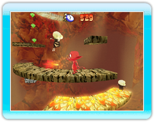

9 |
Main Game |
 |
 Starting a game In the main menu, select "Main Game" to start a game. Then select "New Game" or "Load Game" to continue a game.
Game principle The game begins in Cocoto's den which he must leave to pursue his friends' kidnappers. You will explore 5 worlds, each as wonderful as it is dangerous. Luckily, Fairy will be there to help you during the long journey.
Actions
Run Move the Control Stick to the left or to the right.
Jump Press the A Button to jump. Once you are in the air press the A Button again to perform a double jump!
Create lava arches Cocoto can create lava arches whenever he wishes to! Press the B Button to create an arch. Use them like bridges by getting up on them. In order to do so, move the Control Stick to the left or to the right. Use the arches as a weapon against your enemies! You can also destroy them by jumping on them and targeting the enemies below.
Throw pitchforks Press the Z Button to throw pitchforks at your enemies! You can do this even while in the air to hit flying enemies!
Special attack Make a quick movement with the Wii Remote when you are close to an enemy to perform a special attack! |
 |
 |
 |